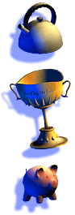

Dans ShadowPlay votre objectif consiste à remplir et à créer l'ombre cible à l'aide des objets qui vous sont fournis. Avec le mode Free Play, vous pouvez jouer avec les objets que vous avez débloqués afin de créer vos propres ombres.

Dans le menu Wii, choisissez la chaîne ShadowPlay pour lancer le jeu. Sur l'écran titre, appuyez sur  pour afficher le menu Select Profile.
pour afficher le menu Select Profile.
Si vous commencez une nouvelle partie, pointez sur un emplacement vide signalé par le point d'interrogation (?) et appuyez sur .
Pour naviguer, vous avez l'option d'utiliser la manette Wii Remote ou  . Appuyez sur pour sélectionner une lettre et appuyez sur pour supprimer le dernier caractère saisi. Vous pouvez également pointer sur l'icône de la touche d'effacement arrière à l'aide de la manette Wii Remote, puis appuyer sur pour supprimer le dernier caractère saisi.
. Appuyez sur pour sélectionner une lettre et appuyez sur pour supprimer le dernier caractère saisi. Vous pouvez également pointer sur l'icône de la touche d'effacement arrière à l'aide de la manette Wii Remote, puis appuyer sur pour supprimer le dernier caractère saisi.
Une fois que vous avez terminé d'inscrire le nom du profil, pointez sur Done en utilisant la manette Wii Remote et appuyez sur .
De retour dans le menu du profil, pointez sur le nom de votre profil en utilisant la manette Wii Remote et appuyez sur pour choisir votre profil. Dans l'éventualité où vous désireriez supprimer un profil, pointez sur le profil à supprimer en utilisant la manette Wii Remote et appuyez sur  . Un menu de confirmation s'affichera pour que vous validiez votre choix.
. Un menu de confirmation s'affichera pour que vous validiez votre choix.
Si vous sélectionnez votre profil, l'écran Theme Select s'affichera.
 « ??? » signifie que vous n'avez pas encore débloqué ce thème ou casse-tête. Au départ, les options à votre disposition seront Training et Free Play.
« ??? » signifie que vous n'avez pas encore débloqué ce thème ou casse-tête. Au départ, les options à votre disposition seront Training et Free Play.
Afin de progresser dans le jeu, sélectionnez Training et complétez la série d'exercices d'entraînement de ce thème.